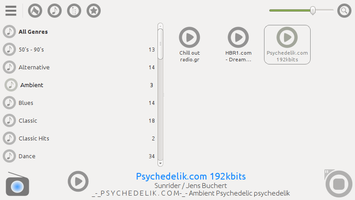
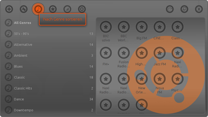
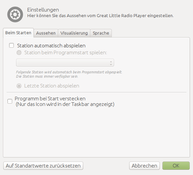
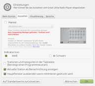
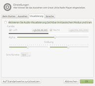
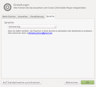

Great Little Radio Player
Dieser Artikel wurde für die folgenden Ubuntu-Versionen getestet:
Ubuntu 14.04 Trusty Tahr
Zum Verständnis dieses Artikels sind folgende Seiten hilfreich:
Great Little Radio Player  ist ein Audioplayer speziell für Internetradio. Das Programm hat ca. 500 weltweite Sender integriert und ist vollständig auf Deutsch lokalisiert. Besonders hervorzuheben ist die leicht zugängliche Programmoberfläche, die auf Wunsch optisch an den eigenen Geschmack angepasst werden kann. Die Audio-Ausgabe erfolgt über das Multimedia-Framework Phonon.
ist ein Audioplayer speziell für Internetradio. Das Programm hat ca. 500 weltweite Sender integriert und ist vollständig auf Deutsch lokalisiert. Besonders hervorzuheben ist die leicht zugängliche Programmoberfläche, die auf Wunsch optisch an den eigenen Geschmack angepasst werden kann. Die Audio-Ausgabe erfolgt über das Multimedia-Framework Phonon.
Einziger Wermutstropfen: eine Aufnahmefunktion ist nicht vorhanden. Die gibt es allerdings bei traditionellen Radioapparaten auch nicht. Und die benötigten Codecs müssen natürlich installiert sein.
Installation¶
 Das Programm ist nicht in den offiziellen Paketquellen enthalten.
Das Programm ist nicht in den offiziellen Paketquellen enthalten.
Fremdpaket¶
Über die Projektseite  werden DEB-Pakete für 32-/64-bit-Systeme angeboten, die heruntergeladen und manuell installiert [1] werden müssen. Alternativ kann man auch über SourceForge herunterladen. Das Installationsverzeichnis ist vorgegeben: /opt/extras.ubuntu.com/glrp/.
werden DEB-Pakete für 32-/64-bit-Systeme angeboten, die heruntergeladen und manuell installiert [1] werden müssen. Alternativ kann man auch über SourceForge herunterladen. Das Installationsverzeichnis ist vorgegeben: /opt/extras.ubuntu.com/glrp/.
Hinweis!
Fremdpakete können das System gefährden.
Bedienung¶
Bei Ubuntu-Varianten mit einem Anwendungsmenü findet man einen Programmstarter [2] unter "Internet -> Great Little Radio Player" oder "Multimedia -> Great Little Radio Player". Alternativ kann man auch folgenden Befehl verwenden:
/opt/extras.ubuntu.com/glrp/GreatLittleRadioPlayer
Die linke Fensterhälfte dient der Anzeige von Kategorien (Sortierung nach Ländern, Genre oder Lieblingsstationen bzw. Favoriten), während die rechte Fensterhälfte die in der jeweiligen Kategorie enthaltenen Sender auflistet. Ein Doppelklick startet den gewünschten Sender. Das Symbol unten links gibt dabei über den Status Auskunft: ein rotes Symbol zeigt, dass der Stream gepuffert wird (oder auf Pause steht), während ein blaues Symbol  die Wiedergabe anzeigt. Beendet wird die Wiedergabe mit der Schaltfläche unten rechts.
die Wiedergabe anzeigt. Beendet wird die Wiedergabe mit der Schaltfläche unten rechts.
Alternativ kann die Steuerung auch über das Kontextmenü  des Symbols im Panel erfolgen.
des Symbols im Panel erfolgen.
|  |
| Standard-Design |
|  |
| Angepasstes Design (Ubuntu-Thema) |
Sender hinzufügen¶
Um einen Sender hinzuzufügen, wählt man über das obere linke Symbol "Sender hinzufügen" aus und gibt neben einem Namen die Stream-Adresse ein. Dabei kann der Artikel Internetradio/Streamadressen ermitteln weiterhelfen. Zur Einordnung in die vorhandenen Kategorien dienen die Angaben zu Genre und Land/Region.
Senderliste bearbeiten¶
Die Datei ~/.config/glrp/stations.csv enthält die komplette Senderliste und kann mit einer Tabellenkalkulation wie LibreOffice Calc oder Gnumeric ergänzt oder korrigiert werden. Dabei unbedingt darauf achten, dass das Programm vorher vollständig beendet wurde (und nicht als Symbol im Panel minimiert ist).
Einstellungen¶
 Die Programmeinstellungen befinden sich ebenfalls hinter dem oberen linken Symbol und verteilen sich auf vier Reiter (Tabs):
Die Programmeinstellungen befinden sich ebenfalls hinter dem oberen linken Symbol und verteilen sich auf vier Reiter (Tabs):
"Beim Starten" - automatisch abspielen, minimiert starten
"Aussehen" - Thema anpassen (der englische Begriff Skin wurde als "Mantel" übersetzt). Benötigt einen aktiven Composite-Manager.
"Visualisierung" - Frequenzanzeige innerhalb des Programmfensters
"Sprache"
|  |
| Beim Starten |
|  |
| Aussehen |
|  |
| Visualisierung |
|  |
| Sprache |
Alle Programmeinstellungen werden in der Datei ~/.config/glrp/Great Little Radio Player.conf (Leerzeichen beachten!) im Homeverzeichnis gespeichert .
Links¶
Tipp der Woche – Great Little Radio Player
 - Linux Community, 09/2013
- Linux Community, 09/2013AudioPlayer
 Programmübersicht
Programmübersicht
- Erstellt mit Inyoka
-
 2004 – 2017 ubuntuusers.de • Einige Rechte vorbehalten
2004 – 2017 ubuntuusers.de • Einige Rechte vorbehalten
Lizenz • Kontakt • Datenschutz • Impressum • Serverstatus -
Serverhousing gespendet von